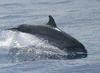

Depuis toujours, les hommes et les Grands dauphins se côtoient avec plus ou moins de bonheur sur l'étroit plateau continental qui prolonge les côtes sous la mer. Le dauphin est sympathique quand il nage à l'étrave des navires ou au travers de ces récits de sauvetage qui fondent bien des légendes. Mais, il est aussi un redoutable concurrent quand il se nourrit des mêmes stocks de poisson que les pêcheurs et quand il s'en prend à leurs filets.
|  | Il faut éviter que cette concurrence, si elle devient trop rude, ne dégénère en conflit ouvert. En 2000, lors d'un recensement mené dans le cadre de notre programme Cap Ligures, les scientifiques ont tiré la sonnette d'alarme : l'exaspération des pêcheurs, confrontés à la multiplication des attaques des Grands dauphins dans leurs filets, atteignait un point critique. Ces témoignages rejoignaient les constatations des personnels et des scientifiques des aires marines protégées corses, travaillant de longue date sur ce terrain. |
Conscients de l'importance de cette problématique, des acteurs locaux - l'Office de l'Environnement de la Corse, le Parc Naturel Régional de Corse, l'Université de Corse et la DIREN-Corse - nationaux - le Sanctuaire PELAGOS (partie française) représenté pour le Ministère de l'environnement par le Parc National de Port-Cros - ainsi que le WWF-France, se sont réunis en 2002 pour essayer d'y apporter des solutions.
Il s'agit donc de maintenir les populations de Grands dauphins en Corse dans un état de conservation favorable, en garantissant une cohabitation harmonieuse entre les activités économiques et l'espèce. En particulier d'associer les principaux acteurs de la gestion de l'environnement, les représentants socio-économiques, les populations locales, et les touristes plaisanciers à une démarche de mise en place de pratiques durables pour les activités de pêche, de nautisme et de whale-watching.
Débuté en 2003, le programme Life LINDA (Limitation des Interactions Négatives entre Dauphins et Activités humaines), vise à trouver des solutions pour améliorer la cohabitation entre le Grand dauphin et l'homme. Ce programme est réalisé en coordination avec 4 partenaires Office de l'Environnement de la Corse, Parc Naturel Régional de Corse, Université de Corse et le Parc national de Port-Cros mandaté par le Ministère de l'Écologie et du Développement Durable pour représenter le Sanctuaire PELAGOS pour la France. Mais également des cofianceurs : la DIREN Corse et la commission européenne grâce à l'outil financier LIFE.
Le projet LINDA propose :
Pour plus d'information : www.lifelinda.org